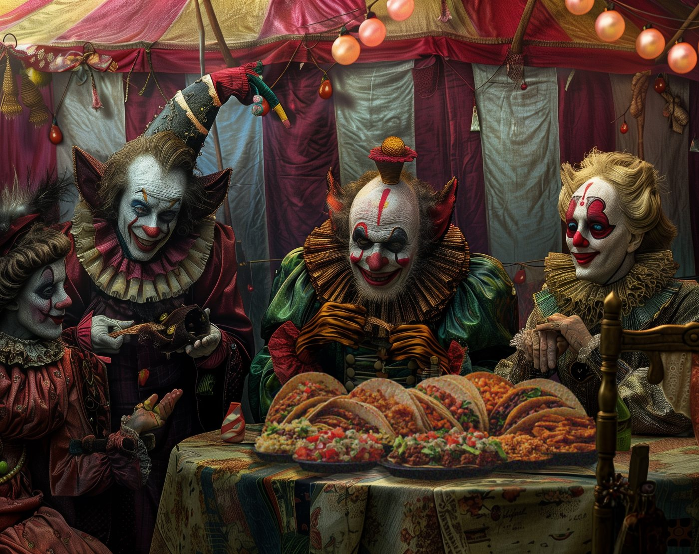

Photo Restoration
Repairing damaged or faded photographs with detailed, hands-on image editing.
INDEPENDENT ARTIST · IMAGE MAKER · PROFESSIONAL TROUBLEMAKER
Surreal art, sharp satire, curious characters, visual puns, and a lifetime of making the improbable look possible.
Enter the cabinet ↘
EXHIBIT 001 — MIDNIGHT TACO CIRCUS01 / THE COLLECTION
A growing collection of strange ideas, familiar rituals, and beautifully questionable decisions. Every image below is actual work from the archive.
Selected works from the Satyrday archive. Click any image to inspect it.
02 / MOVING PICTURES
Original lyrics by Chris Jack. AI-assisted mariachi music and video. A 34-second declaration of culinary devotion.
Part food commercial, part romantic confession, entirely serious about tacos.
“Los tacos son mi verdadero amor.”
Original lyrics written in English and Spanish, paired with AI-generated music and moving images.
See the original NFT on objkt ↗03 / THE PERSON BEHIND THE PICTURES
I'm Chris Jack — an artist, visual storyteller, Photoshop hand, and longtime admirer of the absurd.
My work moves between surreal illustration, cultural satire, visual wordplay, digital restoration, and experiments with new creative tools. I have also worked in film production and visual-effects coordination, including on Planet Terror.
AI is one instrument in the toolbox. The idea, direction, selection, editing, and sense of humor are where the human shows up.
“High Production Values. Low Moral Standards.”
04 / THE OTHER SIDE OF THE STUDIO
Repairing damaged or faded photographs with detailed, hands-on image editing.
Photoshop cleanup, reconstruction, color work, and creative visual problem-solving.
Conceptual imagery, surreal compositions, visual satire, and experimental multimedia.
05 / COME ON IN
Interested in a project, a print, a collaboration, or just the stories behind the work?
Direct contact details can be added when you're ready to publish them.